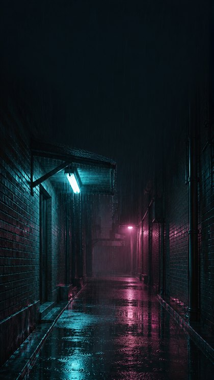
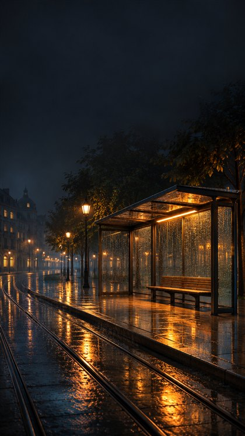
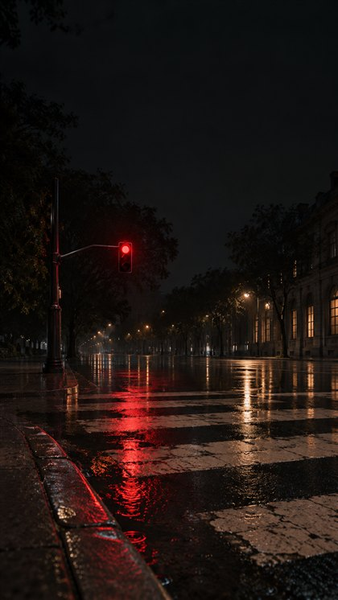
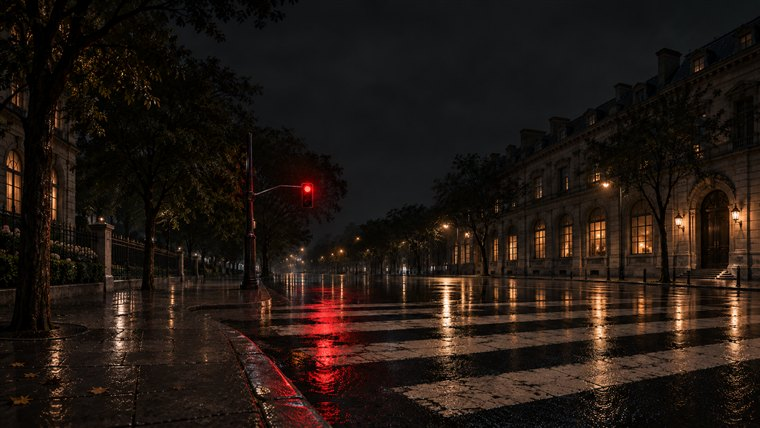
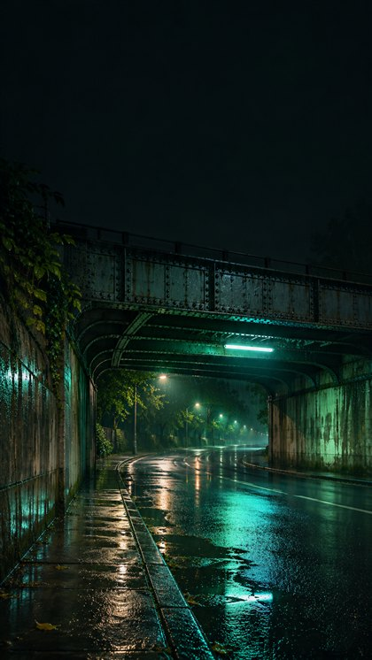
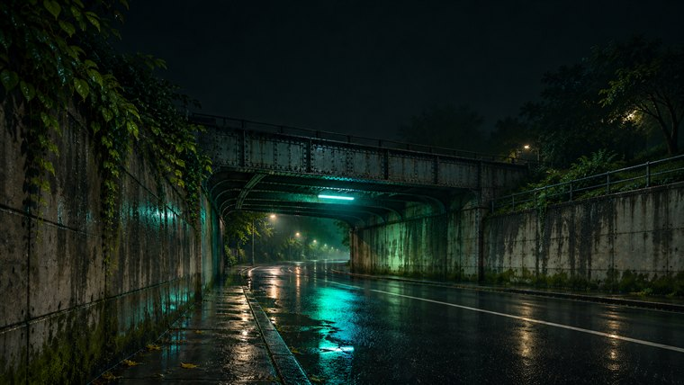
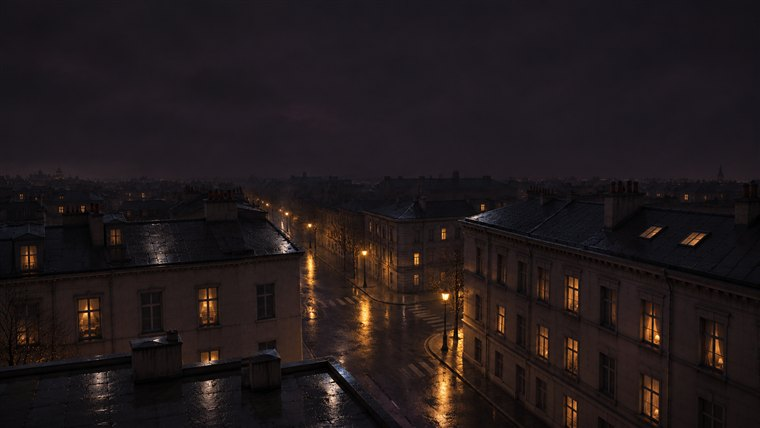
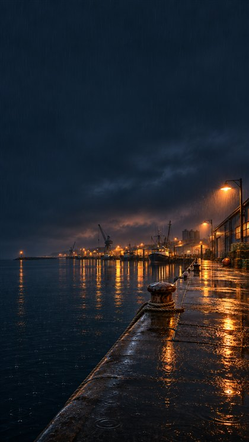
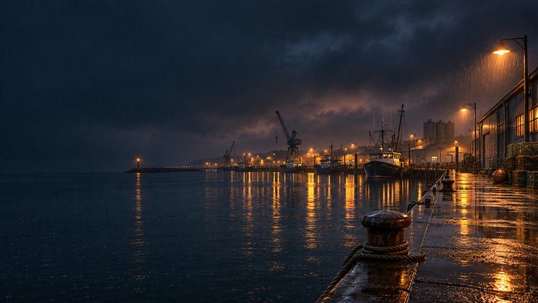

Neongasse


Hintergrundbilder
Zehn fiktive Stadtszenen bei Nacht. Jedes Motiv gibt es im Hochformat fürs Smartphone und im Querformat für den Desktop.
KI-generierte Bilder.
Demnächst bei Payhip als einzelne Downloads und als zwei Alben erhältlich.
















